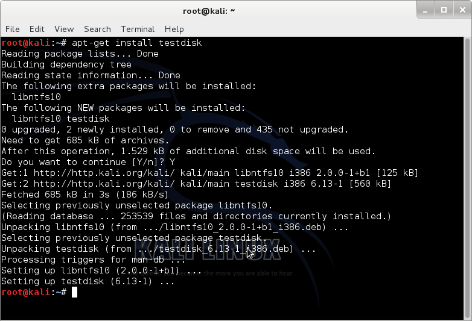
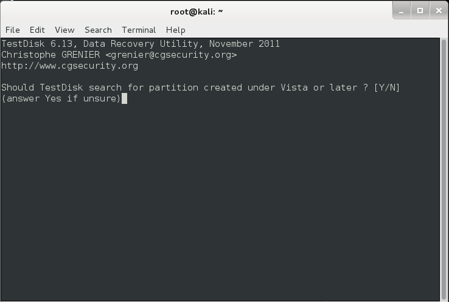

Aslında hep olan şeyler bunlar. Yanlış yere format atmak, yanlış diski silmek, birden fazla dosya silerken silinmemesi gereken şeyleri de silmek. GNU/Linux altında son kullanıcıya en yakın araçlardan biri olan testdisk ile verilerinizi hızlıca kurtarabilmeniz mümkün.
Gerek günlük hayatımızda, gerekse kurumsal yaşantımızda veri depolama aygıtlarımız bir anda bozulabilir ve işlerimiz planladığımız gibi gitmeyebilir. Bu gibi durumlarda veri kurtarma araçlarını kullandığımızda, çoğu aracın sonucu saatler dahilinde verdiğini görürüz. Bu süreç, bilgisayarınızın donanımına da bağlı olabilir, programın kodlanış biçimine de. Gelelim, verilerimizi en hızlı şekilde nasıl kurtarabileceğimize. Yardımcımızın adı, testdisk.
Uçbirim aracılığı ile kolayca çalıştırılabilen bu program, basit bir şekilde hasar görmüş veri depolama aygıtınızdaki verileri kurtarmanıza ve sisteminize tekrar kopyalamanıza yardımcı olur.
Kullanımını Kali Linux üzerinde açıklayacağım bu programın kurulumunu, Debian işletim sistemi tabanlı tüm Linux dağıtımlarında aynı şekilde yapabilirsiniz.

Kurulum için uçbirim’e “apt-get install testdisk” yazıyoruz ve programımız kuruluyor.

Bu aşamadan sonra, uçbirim’e testdisk yazıp programımızı çalıştırıyoruz.
Program açılışta tanıtım yazısını sunuyor ve bize seçenekler sunuyor. Yeni bir veri kurtarma çalışması yapacağımızdan, “create” seçimini yapıp Enter’e basarak devam ediyoruz.

Ardından, bizden listelediği sürücü ya da aygıtlar arasından seçim yapmamızı istiyor. Burada biraz dikkatli olmamız gerekiyor zira yanlış sürücü ya da aygıt seçimleri yanlış şeylere neden olabiliyor. Hasar görmüş olan veri depolama aygıtımızı seçip, yolumuza Enter tuşu ile devam ediyoruz.

Bu bölüm biraz daha önem arz ediyor. Eğer, kurtarmaya çalıştığınız sadece harici bir veri depolama aygıtı ise “none” kısmı bu iş için uygundur; lâkin, kurtarmaya çalıştığınız işletim sisteminize bağlı dahili depolama aygıtınız ise, buna göre seçim yapmalısınız. Örneğin, işletim sisteminiz (aygıta bağlı) Linux ya da Windows ise “Intel” gibi…
Bu bölümü de atlayıp yolumuza devam ediyoruz.

Bu bölümde dahil, bu bölümden sonra atacağımız her adımda dikkatli olmamızda yarar var. Bilmediğimiz şeyleri yapmamakta da öyle. “Analyse” bizim için uygun olan seçenek.

Burada da, “Quick Search” diyerek devam ediyoruz zira başka bir seçenek yok.

Bize yapacağımız taramadan emin olup olmadığımız soruluyor ve “y” ya da “yes” yazarak yolumuza devam ediyoruz.

ve Tarama başlıyor. Tarama bittikten sonra kurtardığı verileri görmek için “P” harfini kullanıp, bulduğunuz verileri sisteminize kopyalamak için yön tuşları ile istediğiniz veri üzerine gelip “C” tuşunu kullanabilirsiniz.
Bu tür sorunlar yaşamamanız dileğiyle…